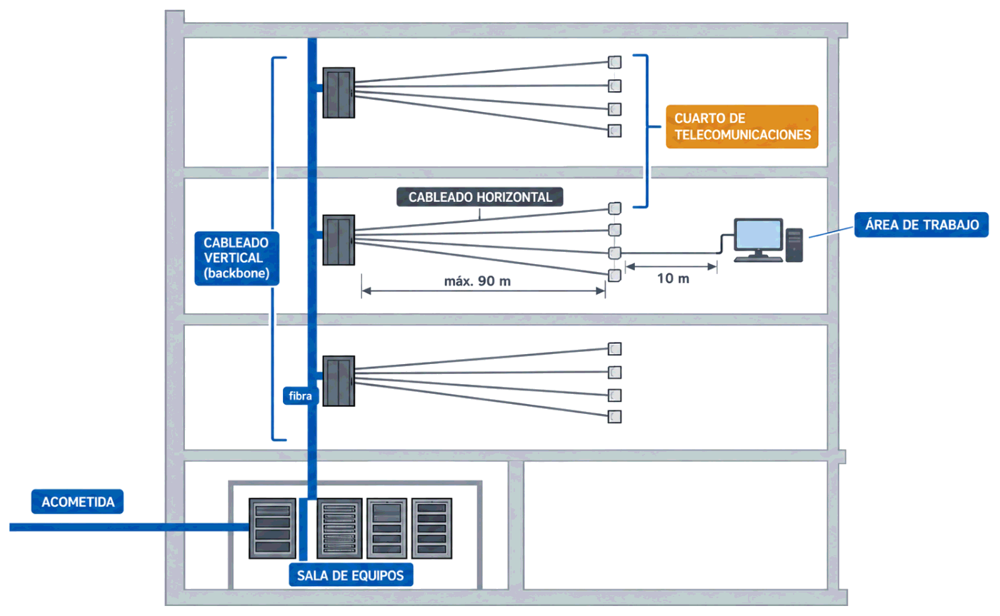
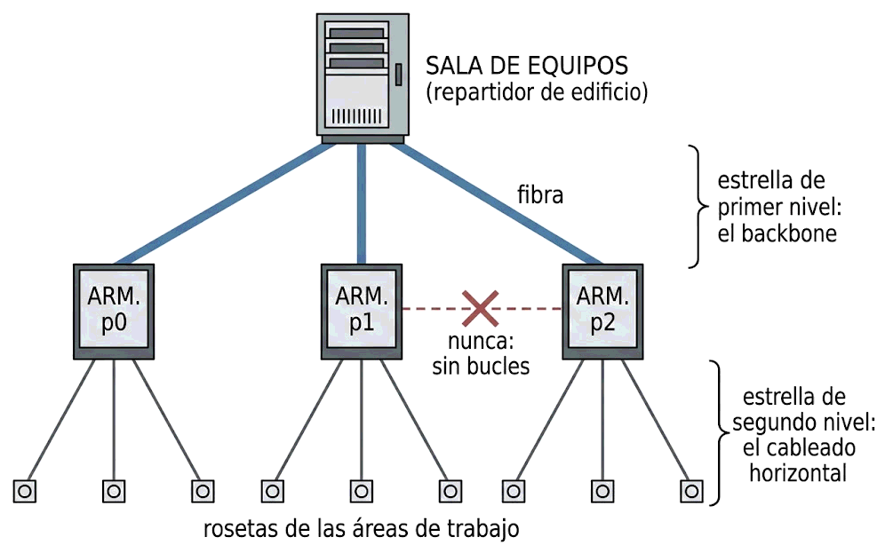
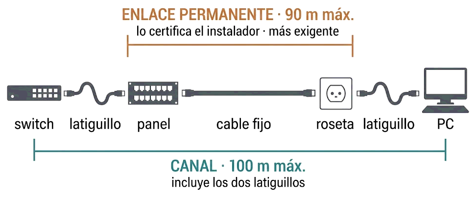

Así que la estructura de hoy procede de las propias normas y de la práctica profesional. Lo señalo una vez aquí y no en cada apartado, para no repetirlo diez veces: todo este día es contenido normativo, no del libro. Lo que sí sale del libro se indica expresamente.
Contenido del día
1. Por qué existe la norma
Imagina un edificio de oficinas de los años ochenta: un cable para los teléfonos, otro distinto para los terminales, otro para la red de un fabricante concreto y otro para el sistema de alarma. Cuatro instalaciones incompatibles, cada una con su cable, su conector y su recorrido. Cambiar de proveedor significaba volver a cablear el edificio.
El cableado estructurado nace para acabar con eso, y su idea central es una sola:
Se instala una única infraestructura, genérica y normalizada, que después sirve para lo que haga falta: red de datos, telefonía, cámaras, control de accesos. Lo que cambia con los años son los equipos de los extremos, no el cable de la pared.
- Vida útil larga. El cableado dura entre quince y veinte años; los equipos, cinco. Por eso se dimensiona con margen, como viste en la Semana 6.
- Independencia del instalador. Otro técnico puede entender y ampliar la instalación sin conocerla, porque sigue un patrón conocido.
- Garantía del sistema. Si la instalación está certificada según norma, el fabricante del material puede garantizarla durante años. Eso se ve el jueves.
2. Los seis subsistemas
La norma trocea el edificio en partes con funciones claras. Recorridas desde la calle hasta el usuario, son estas:
| # | Subsistema | Qué es | Qué contiene |
|---|---|---|---|
| 1 | Acometida entrada de servicios |
El punto por donde entran en el edificio los servicios del operador | Registro de entrada, protecciones, el final de la fibra del operador |
| 2 | Sala de equipos | El centro de la instalación: donde viven los equipos que dan servicio a todo el edificio | Servidores, electrónica principal, el repartidor de edificio |
| 3 | Cableado vertical backbone o troncal |
Une la sala de equipos con los armarios de cada planta | Normalmente fibra óptica, a veces cobre de muchos pares |
| 4 | Cuarto de telecomunicaciones armario de planta |
El punto de distribución de una planta o de una zona | Armario con paneles de parcheo, switches y latiguillos |
| 5 | Cableado horizontal | Del armario de planta a cada toma de usuario. Es el más numeroso y el que no se toca nunca | Par trenzado, canalizado por techos y tabiques |
| 6 | Área de trabajo | El puesto del usuario, desde la roseta hasta su equipo | Roseta, latiguillo y el equipo conectado |
Y hay un séptimo elemento que no es un lugar, sino una tarea que atraviesa a todos los demás: la administración, es decir, el etiquetado y la documentación. Es el tema del jueves.

calle ──▶ ACOMETIDA ──▶ SALA DE EQUIPOS
│
│ cableado VERTICAL (backbone, fibra)
├──────────▶ ARMARIO planta 1 ─┬─▶ roseta ─▶ equipo
│ ├─▶ roseta ─▶ equipo
│ └─▶ … cableado HORIZONTAL
└──────────▶ ARMARIO planta 2 ─┬─▶ …
└─▶ …El cableado horizontal es fijo: va dentro de la pared, se instala una vez y no se toca en años. Los latiguillos son móviles: se cambian a diario para reconfigurar la red.
Por eso todo el diseño gira alrededor de una idea: que ningún cambio obligue a tocar lo que está dentro de la pared. Ese es el motivo de existir del panel de parcheo.
3. La topología en estrella jerárquica
Los subsistemas no se conectan de cualquier manera. La norma impone una forma concreta: estrella jerárquica, también llamada árbol.

SALA DE EQUIPOS
(repartidor de edificio)
╱ │ ╲
╱ │ ╲ ← estrella de primer nivel:
ARM. p0 ARM. p1 ARM. p2 el backbone
╱ │ ╲ ╱ │ ╲ ╱ │ ╲
○ ○ ○ ○ ○ ○ ○ ○ ○ ← estrella de segundo nivel:
rosetas de las áreas de trabajo el cableado horizontal| Regla | Por qué |
|---|---|
| Cada toma cuelga de un solo armario de planta | Una avería afecta a una zona identificable, y la documentación es posible |
| Cada armario cuelga de la sala de equipos | Hay un único punto central desde el que gestionar todo |
| Sin bucles ni caminos alternativos en el cableado | El cableado es pasivo: la redundancia se resuelve con equipos, no con cables cruzados |
| Como mucho, un nivel intermedio entre la sala y la toma | Más saltos significan más conectores, más pérdidas y más sitios donde fallar |
4. Las distancias que hay que respetar
Estas cifras ya las conoces en parte; aquí quedan colocadas en su sitio dentro del sistema:
| Tramo | Límite | Comentario |
|---|---|---|
| Cableado horizontal fijo del panel a la roseta | 90 m | Es el tramo que no se toca. Por eso se mide y se certifica |
| Latiguillos, sumando los dos extremos | 10 m | Habitualmente 5 m en el área de trabajo y 5 m en el armario |
| Enlace completo | 100 m | La cifra que hay que recordar: 90 + 10 |
| Cableado vertical | Depende del medio | Con fibra, cientos de metros o kilómetros; el cobre queda otra vez limitado |
Los 90 m son de cable, no de distancia en línea recta. El cable sube al falso techo, recorre el pasillo, baja por el tabique y da vueltas dentro del armario. Una toma que está a 55 m en el plano puede llevar fácilmente 75 u 80 m de cable.
Regla práctica de instalador: cuenta la distancia en planta, añade un 20 % por recorridos y otros 3 m por cada cambio de altura. Si el resultado pasa de 90, hay que mover el armario o partir la planta en dos zonas.
5. Enlace permanente y canal
Aquí hay una distinción que parece burocrática y es la que decide si una instalación se aprueba o se rechaza. Hay dos formas de medir el mismo tramo:
| Enlace permanente | Canal | |
|---|---|---|
| Qué incluye | Solo la parte fija: del panel de parcheo a la roseta, con sus dos conectores | Todo: enlace permanente más los dos latiguillos |
| Longitud máxima | 90 m | 100 m |
| Quién lo mide | El instalador, al entregar la obra | El administrador, cuando algo falla |
| Por qué | Es lo único de lo que el instalador responde: los latiguillos los pone y los cambia el cliente | Es lo que de verdad ve el equipo conectado |
| Exigencia | Mayor: menos elementos, así que se toleran menos pérdidas | Menor: se admite más atenuación porque hay más cable y más conectores |

ENLACE PERMANENTE (90 m máx · lo certifica el instalador)
┌──────────────────────────────┐
[switch] ~~latiguillo~~ [panel]════cable fijo════[roseta] ~~latiguillo~~ [PC]
└────────────────────── CANAL (100 m máx) ──────────────────────┘6. El área de trabajo: cuántas tomas
Una pregunta que parece menor y decide el presupuesto entero: ¿cuántas tomas se ponen por puesto?
Dos tomas por área de trabajo, entendiendo por área de trabajo unos 10 m². Una para el equipo y otra de reserva o para el teléfono.
El motivo no es el capricho de una norma, es económico: lo caro de una toma no es la roseta ni los metros de cable, es la obra —abrir, canalizar, tirar, rematar—. Añadir una segunda toma mientras la canaleta está abierta cuesta una fracción; añadirla dos años después cuesta lo mismo que la primera instalación de ese punto.
En cableado estructurado, lo caro es el acceso, no el material. Por eso se sobredimensiona: más tomas, más categoría, más espacio en la canaleta y más unidades libres en el armario. Todo lo que se deja previsto mientras la pared está abierta sale casi gratis.
7. Resumen y errores frecuentes
- El cableado estructurado es independiente de la aplicación: una sola infraestructura para datos, voz y lo que venga.
- Seis subsistemas: acometida · sala de equipos · vertical · cuarto de telecomunicaciones · horizontal · área de trabajo, más la administración como tarea transversal.
- Topología en estrella jerárquica, sin bucles y con un solo nivel intermedio.
- 90 m de cableado fijo + 10 m de latiguillos = 100 m de enlace.
- El enlace permanente es la parte fija, lo certifica el instalador y es más exigente. El canal lo incluye todo.
- Dos tomas por área de trabajo de unos 10 m².
- Lo caro es el acceso: se sobredimensiona mientras la pared está abierta.
| Se dice… | …pero en realidad |
|---|---|
| «El cableado se diseña para la red que vamos a montar» | Se diseña independiente de la aplicación, porque dura mucho más que los equipos |
| «Los 90 metros son la distancia entre los dos puntos» | Son metros de cable, con sus subidas, rodeos y vueltas dentro del armario |
| «Enlace permanente y canal son lo mismo» | Se miden distinto y tienen límites distintos: 90 m y 100 m |
| «Pongo una toma por puesto y ya ampliaré» | Ampliar después cuesta como la instalación original: lo caro es abrir la pared |
| «Conecto dos armarios entre sí para tener redundancia» | La estrella jerárquica no admite bucles: la redundancia se resuelve con equipos |
| «El backbone es cable de red más largo» | Suele ser fibra, precisamente porque el cobre no llega |
8. Repaso con flashcards
Piensa la respuesta antes de girar la tarjeta.
Quiz del día
15 preguntas · 21 minutos · Contesta sin volver a la teoría
El cronómetro no corre mientras lees: arranca al llegar aquí, al pulsar «Empezar quiz» o al marcar tu primera respuesta.
Resultados
Respuestas correctas: 0 / 0
Respuestas incorrectas: 0
Vas a reconocer los seis subsistemas en el edificio donde vives o estudias, dibujar su estrella jerárquica y comprobar si las distancias cuadran.
→ Ir al laboratorio del Día 1 (66 min)
Instalación física: canalizaciones, armarios, unidades de rack y las buenas prácticas que deciden si el miércoles la instalación pasa la certificación.
Tarea de calentamiento (5 min): busca una canaleta en tu casa o tu centro. ¿Va el cable de red por el mismo hueco que el eléctrico?